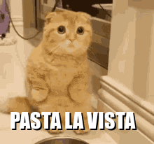

FELIZ CATURDAY 3 DE DICIEMBRE DE 2005


¡Nos veremos el próximo Caturday, que será el 10 de diciembre!
Esta página web ha sido visitada por... 5304 personas!
Gracias!
F.A.Q.
¿Qué es Caturday?
Es una fiesta en honor a los gatos!
¿Cuándo es el próximo Caturday?
El 10 de diciembre de 2005!
¿Qué necesito para celebrar Caturday?
Nada!!